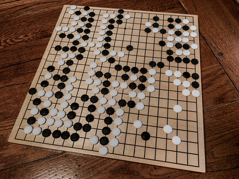

The Art of the Algorithm: How AI's Gaming Strategies are Shaping the Future of Innovation
Demis Hassabis is a name you might not have heard before, but trust me, you will. This guy is the real deal when it comes to artificial intelligence (AI). He’s the mastermind behind DeepMind, a company that’s been making waves in the AI world for years now. And recently, he gave a talk that blew my mind.
Now, I’ve been around the block a few times when it comes to technology. I’ve seen my fair share of overhyped vaporware and empty promises. But Hassabis is different. This guy has a vision for AI that’s both thrilling and terrifying at the same time.
The Early Days: Pondering the Big Questions
It all started when Hassabis was just a kid. While most of us were busy playing with our Game Boys and watching cartoons, Hassabis was pondering the big questions of the universe. You know, stuff like “What is consciousness?” and “What’s the fundamental nature of reality?” Heavy stuff for a kid, right?
But Hassabis wasn’t content to just sit around and ponder these questions. He wanted answers. And he realized that AI might just be the key to unlocking them.
The Rise of DeepMind
Fast forward a few years, and Hassabis is now the head of DeepMind, one of the most advanced AI companies in the world. And he’s not wasting any time. His team started by tackling games, of all things. But not just any games – we’re talking about complex strategy games like Go and chess.
Now, I know what you’re thinking. “Why would a bunch of super-smart AI researchers waste their time playing board games?” But as Hassabis explained in his talk, games are actually the perfect testing ground for AI algorithms. They provide a clear objective (win the game) and a way to measure progress (did the AI beat its opponent?).
And boy, did DeepMind’s AI algorithms make progress. In just a few short years, they went from barely being able to play Go at all to beating the world champion. And then they did the same thing with chess. In fact, their AI system AlphaZero was able to teach itself to play chess at a superhuman level in just a few hours.
The Power of Perfect Information
Now, let’s talk a bit more about why Hassabis and his team at DeepMind started with board games. At first glance, it might seem like a strange choice. I mean, here you have some of the smartest people in the world, with access to the most advanced technology, and they’re spending their time playing chess and Go? What gives?
But as Hassabis explained in his talk, there’s actually a really good reason for this. You see, board games like chess and Go are what’s known as “perfect information” games. That means that both players have access to all the same information – there’s no hidden cards or secret moves. Everything is right there on the board, plain as day.
This might not sound like a big deal, but it’s actually crucial for training AI systems. Because when you’re trying to teach an AI to make decisions, you need to be able to give it clear feedback on whether those decisions were good or bad. And with a game like chess, that feedback is immediate and unambiguous. Either the AI made a good move and put its opponent in a tough spot, or it made a bad move and lost a piece.
Compare that to something like natural language processing, where the feedback is much more subtle and subjective. If you’re trying to teach an AI to write a story, for example, how do you even begin to evaluate whether it’s doing a good job? There’s no clear right or wrong answer, and different people might have different opinions on what makes a story compelling.
But with board games, the rules are clear and the objectives are well-defined. And that makes them the perfect training ground for AI systems.
The Rise of AlphaGo
 Go game. photo by Alvin Trusty via Flickr
Take AlphaGo, for example. This was the AI system that DeepMind developed to play the ancient Chinese game of Go. Now, Go is a notoriously difficult game for computers to play. There are more possible configurations of the board than there are atoms in the universe, and even the best human players rely on intuition and pattern recognition to make their moves.
But AlphaGo was able to crack the code. Using a combination of deep learning and reinforcement learning, it was able to teach itself to play Go at a superhuman level. And the key to its success was the fact that it could play millions of games against itself, learning from its mistakes and refining its strategies with each iteration.
In fact, AlphaGo got so good that it was able to beat the world champion, Lee Sedol, in a highly publicized match back in 2016. And that was a huge milestone for the field of AI. It showed that machines could not only compete with humans at complex tasks, but actually outperform them.
The Next Generation: AlphaZero
But the story doesn’t end there. Because after AlphaGo, DeepMind went on to develop AlphaZero – an even more advanced AI system that could teach itself to play not just Go, but also chess and shogi (a Japanese version of chess). And the really amazing thing about AlphaZero was that it was able to master all three games without any human input at all.
That’s right – AlphaZero started out with just the basic rules of each game, and then played millions of games against itself, using a process called “self-play” to gradually improve its skills. And within just a few hours, it had reached a level of mastery that would take even the most dedicated human players a lifetime to achieve.
In fact, when AlphaZero played against Stockfish – one of the best chess engines in the world – it won convincingly, with 28 wins, 0 losses, and 72 draws. And it did this without any specialized chess knowledge or hand-crafted features. It simply learned to play the game from scratch, using its own intuition and pattern recognition abilities.
From Games to Real-World Problems
Now, I know what you’re thinking. “That’s all well and good, but how does playing board games help us solve real-world problems?” And that’s a fair question. After all, it’s not like we’re going to beat cancer by playing a few rounds of chess.
But the thing is, the skills and techniques that DeepMind developed through its work on board games are actually incredibly valuable for a wide range of applications. The ability to learn from experience, to recognize patterns, and to make decisions based on incomplete information – these are all things that AI systems need to be able to do if they’re going to tackle complex problems in fields like medicine, finance, and transportation.
And that’s exactly what DeepMind is doing now. They’re taking the lessons they learned from AlphaGo and AlphaZero, and applying them to some of the biggest challenges facing humanity today.
For example, they’ve developed an AI system called AlphaFold that can predict the 3D structure of proteins with incredible accuracy. This is a huge deal, because understanding protein structure is key to developing new drugs and treatments for a wide range of diseases.
They’re also working on AI systems that can help us optimize energy grids, reduce traffic congestion, and even predict natural disasters like earthquakes and tsunamis.
Beyond DeepMind: The Broader Impact of Machine Learning
Let’s take a look at some other examples of how learning has been used to improve AI performance beyond just DeepMind.
IBM Watson
One great example is IBM’s Watson system. Now, you might remember Watson from its famous appearance on the TV game show Jeopardy! back in 2011. But what you might not know is that Watson’s success on Jeopardy! was the result of years of machine learning and natural language processing research.
You see, Watson was trained on a huge corpus of text data, including everything from encyclopedias to news articles to literary works. And through a process called “information extraction,” it learned to identify and extract relevant facts and relationships from this data.
But the really impressive thing about Watson was its ability to understand and respond to natural language questions. And this is where machine learning really came into play. By training on thousands of example questions and answers, Watson learned to map the structure and meaning of questions to the relevant facts and relationships in its knowledge base.
And the results speak for themselves. In its Jeopardy! match against two of the show’s most successful human contestants, Watson won handily, demonstrating its ability to quickly and accurately respond to a wide range of complex questions.
Google’s AlphaGo
Another example of machine learning in action is Google’s AlphaGo system. Now, I know we’ve already talked a bit about AlphaGo and its success in the game of Go. But what’s really interesting about AlphaGo is how it was able to improve its performance over time through a process called “reinforcement learning.”
Reinforcement learning is a type of machine learning where an AI system learns to make decisions based on feedback from its environment. In the case of AlphaGo, that feedback came in the form of wins and losses against other Go players, both human and AI.
And through this process of trial and error, AlphaGo was able to gradually refine its decision-making abilities, learning from its mistakes and developing new strategies and tactics. In fact, by the time of its historic match against world champion Lee Sedol, AlphaGo had played millions of games against itself and other AI systems, using each one as an opportunity to learn and improve.
CheXNet
But machine learning isn’t just limited to games and trivia. It’s also being used to tackle some of the biggest challenges facing society today.
For example, researchers at Stanford University have developed an AI system called “CheXNet” that can diagnose pneumonia from chest X-rays with higher accuracy than human radiologists. And the key to CheXNet’s success is deep learning, a type of machine learning that involves training neural networks on large datasets of images.
By training on over 100,000 chest X-rays, CheXNet learned to identify the subtle patterns and features that are indicative of pneumonia. And in a head-to-head comparison with human radiologists, CheXNet was able to outperform them, accurately diagnosing pneumonia in 14 out of 15 cases.
Scientific Research
Perhaps the most exciting application of machine learning is in the field of scientific research itself. Scientists are using machine learning algorithms to analyze huge datasets and identify patterns and insights that might otherwise go unnoticed.
For example, researchers at NASA are using machine learning to analyze data from the Kepler space telescope, which has been searching for exoplanets (planets outside our solar system) since 2009. By training machine learning algorithms on the vast amounts of data collected by Kepler, these researchers have been able to identify dozens of new exoplanets that might have been missed by traditional analysis methods.
And this is just the tip of the iceberg. Machine learning is being used to tackle everything from climate change and renewable energy to drug discovery and personalized medicine.
So while it might be easy to dismiss machine learning as just a bunch of computer geeks playing games, the reality is that it’s one of the most powerful tools we have for solving some of the world’s biggest challenges. And as the field continues to evolve and mature, I have no doubt that we’ll see even more incredible breakthroughs in the years to come.
The Protein Folding Problem
But Hassabis and his team weren’t content to just beat humans at board games. They wanted to use AI to solve real-world problems. And that’s where things get really exciting.
One of the biggest challenges in biology and medicine is something called the “protein folding problem.” Basically, proteins are these incredibly complex molecules that play a crucial role in almost every biological process in our bodies. But figuring out how they fold into their final shape has been a mystery for decades.
Enter AlphaFold, DeepMind’s AI system for solving the protein folding problem. Using advanced machine learning techniques, AlphaFold was able to predict the 3D structure of proteins with mind-blowing accuracy. We’re talking about predictions that were within the width of an atom!
To put this in perspective, imagine you’re a scientist who’s been studying a particular protein for years. You’ve tried every experimental technique in the book, but you just can’t seem to figure out its structure. Then along comes AlphaFold, and boom – it spits out a near-perfect prediction in just a few hours.
The Building Blocks of Life
Alright, let’s dive into the fascinating world of proteins and how AI is revolutionizing the way we study them.
First off, let’s talk about what proteins actually are and why they’re so important. Proteins are like the building blocks of life. They’re responsible for pretty much everything that happens in our bodies, from digesting food and repairing tissues to fighting off infections and transmitting signals between cells.
But here’s the thing: proteins are really, really complicated. They’re made up of long chains of amino acids that fold and twist into intricate 3D shapes. And it’s these shapes that determine how proteins function and interact with other molecules in the body.
Now, if you’re not a biochemist, you might be wondering why the shape of a protein is such a big deal. But trust me, it’s crucial. Just like how a key has to have the right shape to fit into a lock, a protein has to have the right shape to do its job properly.
And that’s where the protein folding problem comes in. You see, figuring out how a protein folds into its final 3D shape is incredibly difficult. There are so many different ways that a protein can twist and turn, and even small changes in the sequence of amino acids can have a big impact on the final structure.
In fact, the protein folding problem has been around for decades, and it’s considered one of the biggest challenges in biology. Scientists have tried all sorts of techniques to solve it, from X-ray crystallography to nuclear magnetic resonance spectroscopy. But even with these advanced tools, it can take years to figure out the structure of just one protein.
AI to the Rescue
That’s where AI comes in. By training machine learning algorithms on huge datasets of protein structures, researchers are now able to predict how proteins will fold with incredible accuracy. And that’s a game-changer for biology and medicine.
Let me give you an example. There’s a protein called p53 that’s known as the “guardian of the genome.” Its job is to prevent cells from turning cancerous by repairing damaged DNA or triggering cell death if the damage is too severe. But in many types of cancer, p53 is mutated or inactivated, allowing cancer cells to grow and spread unchecked.
For years, scientists have been trying to figure out how to reactivate p53 in cancer cells. But to do that, they need to understand exactly how p53 folds and interacts with other molecules in the cell. And that’s where AI-based protein structure prediction comes in.
By using machine learning algorithms to predict the 3D structure of p53 and other cancer-related proteins, researchers are now able to design new drugs that can target these proteins with incredible precision. And that’s just one example of how AI is transforming the field of cancer research.
But it’s not just cancer. AI-based protein structure prediction is also being used to study a wide range of other diseases, from Alzheimer’s and Parkinson’s to infectious diseases like HIV and COVID-19.
In fact, when the COVID-19 pandemic first hit, researchers around the world raced to understand the structure of the virus’s spike protein, which it uses to infect human cells. And guess what? AI-based protein structure prediction played a key role in that effort.
By training machine learning algorithms on data from previous coronavirus outbreaks, researchers were able to quickly predict the structure of the COVID-19 spike protein and identify potential drug targets. And that knowledge is now being used to develop new vaccines and treatments for the virus.
Designing New Proteins from Scratch
But AI isn’t just being used to predict protein structures. It’s also being used to design entirely new proteins from scratch.
You see, proteins are incredibly versatile molecules. By tweaking their amino acid sequences, scientists can create proteins with all sorts of novel functions, from breaking down pollutants to delivering drugs to specific parts of the body.
But designing new proteins is a bit like trying to write a novel by randomly combining words from a dictionary. There are just too many possibilities to explore by trial and error. And that’s where AI comes in.
By using machine learning algorithms to analyze vast libraries of protein sequences and structures, researchers are now able to predict which amino acid combinations are most likely to produce proteins with desired functions. And that’s leading to all sorts of exciting new applications, from biofuels and renewable plastics to personalized medicine and gene therapy.
In fact, there’s even a company called Ginkgo Bioworks that’s using AI-designed proteins to create everything from new fragrances and flavors to industrial enzymes and living medicines. And they’re just one example of how AI is enabling a new era of synthetic biology.
Democratizing Protein Research
But perhaps the most exciting thing about AI-based protein research is how it’s democratizing the field. Traditionally, studying proteins required access to expensive lab equipment and specialized expertise. But with AI, anyone with a computer and an internet connection can start making predictions and designing new proteins. Take the FoldIt project, for example. It’s an online game that challenges players to solve protein folding puzzles by manipulating virtual protein structures. And by harnessing the collective intelligence of thousands of players around the world, FoldIt has already led to some major breakthroughs, including the discovery of a new enzyme that could help break down toxic chemicals.
The Future of Medicine
So what does all this mean for the future of medicine? Well, for one thing, it means that we’re going to see a lot more targeted therapies that are tailored to individual patients based on their unique genetic makeup and disease profile.
Instead of the one-size-fits-all approach of traditional drug development, AI-based protein research is enabling a new era of precision medicine, where drugs are designed to target specific molecular pathways and minimize side effects.
And it’s not just drugs. AI is also being used to develop new diagnostic tools that can detect diseases earlier and more accurately than ever before. By analyzing patterns in genetic data, medical images, and other types of biological data, machine learning algorithms are able to identify subtle signs of disease that might be missed by human doctors.
For example, there’s a company called Grail that’s using AI to develop a blood test for early cancer detection. By analyzing fragments of DNA that are shed by tumors into the bloodstream, Grail’s AI algorithms are able to detect over 50 types of cancer with a single test, often before symptoms even appear.
And that’s just the beginning. As AI continues to advance, we can expect to see even more breakthroughs in medical research and patient care. From personalized drug therapies to predictive health monitoring, AI is poised to transform the way we think about health and disease.
Navigating the Risks and Challenges
As with any new technology, there are risks and challenges that we’ll need to navigate carefully. We’ll need to ensure that AI-based medical research is conducted ethically and transparently, with safeguards in place to protect patient privacy and prevent unintended consequences.
And we’ll need to work to make sure that the benefits of AI are distributed equitably, so that everyone has access to the latest advances in medical science, regardless of their background or socioeconomic status.
But despite these challenges, I’m incredibly optimistic about the future of AI in medicine. By harnessing the power of machine learning to solve complex biological problems like the protein folding problem, we’re opening up a whole new world of possibilities for human health and well-being.
And who knows? Maybe someday, thanks to AI, we’ll be able to cure diseases that have plagued humanity for centuries, from cancer and Alzheimer’s to diabetes and heart disease. Maybe we’ll be able to extend human lifespan and healthspan in ways that we can barely imagine today.
The Moloch Trap
As Hassabis pointed out in his talk, the rapid progress of AI also raises some tough questions. Like, what happens when companies are so focused on beating their competitors that they start cutting corners and taking unnecessary risks?
This is where the concept of the “Moloch Trap” comes in. Basically, it’s the idea that even if everyone involved has good intentions, the pressures of competition can lead to some pretty bad outcomes.
Hassabis used the example of ChatGPT. Overnight, it seemed like everyone and their grandma was talking about how AI was going to take over the world. And suddenly, there was this intense pressure for other companies to catch up and release their own chatbots, even if they weren’t quite ready for prime time. This is the kind of thing that keeps Hassabis up at night. He knows that the race to build artificial general intelligence (AGI) is going to be intense. But he also knows that we can’t afford to cut corners or take unnecessary risks along the way.
That’s why he’s such a big believer in collaboration and cooperation. He thinks that as we get closer to AGI, we need to have input from all parts of society – not just industry labs, but also governments, academia, and regular folks like you and me.
Because let’s face it, the AI revolution is going to affect all of us. It’s going to change the way we work, the way we learn, and even the way we think about what it means to be human.
But here’s the thing: I’m actually pretty excited about it. Sure, there are risks involved. But there are also incredible opportunities. And with people like Demis Hassabis leading the way, I think we’re in good hands. So buckle up, folks. The AI revolution is just getting started, and it’s going to be one hell of a ride. But don’t worry – we’ve got some of the brightest minds in the world working on making sure it’s a ride we can all enjoy. And who knows? Maybe someday, we’ll all be sitting around, marveling at how AI helped us unlock the secrets of the universe. Wouldn’t that be something?
References
-
Artificial intelligence and the future of protein folding. (2020, December 15). Nature. https://www.nature.com/articles/d41586-020-03348-4
-
Senior, A. W., Evans, R., Jumper, J., Kirkpatrick, J., Sifre, L., Green, T., … & Hassabis, D. (2020). Improved protein structure prediction using potentials from deep learning. Nature, 577(7792), 706-710. https://doi.org/10.1038/s41586-019-1923-7
-
Silver, D., Hubert, T., Schrittwieser, J., Antonoglou, I., Lai, M., Guez, A., … & Hassabis, D. (2018). A general reinforcement learning algorithm that masters chess, shogi, and Go through self-play. Science, 362(6419), 1140-1144. https://doi.org/10.1126/science.aar6404
-
Jumper, J., Evans, R., Pritzel, A., Green, T., Figurnov, M., Ronneberger, O., … & Hassabis, D. (2021). Highly accurate protein structure prediction with AlphaFold. Nature, 596(7873), 583-589. https://doi.org/10.1038/s41586-021-03819-2
-
Callaway, E. (2020). ‘It will change everything’: DeepMind’s AI makes gigantic leap in solving protein structures. Nature, 588(7837), 203-204. https://doi.org/10.1038/d41586-020-03348-4
-
Sample, I. (2017, October 18). Google’s DeepMind makes AI program that can learn like a human. The Guardian. https://www.theguardian.com/global/2017/mar/14/googles-deepmind-makes-ai-program-that-can-learn-like-a-human
-
Bostrom, N. (2017). Strategic implications of openness in AI development. Global Policy, 8(2), 135-148. https://doi.org/10.1111/1758-5899.12403
-
Ferryman, K., & Pitcan, M. (2018). Fairness in precision medicine. Data & Society. https://datasociety.net/library/fairness-in-precision-medicine/
-
Topol, E. J. (2019). High-performance medicine: the convergence of human and artificial intelligence. Nature Medicine, 25(1), 44-56. https://doi.org/10.1038/s41591-018-0300-7